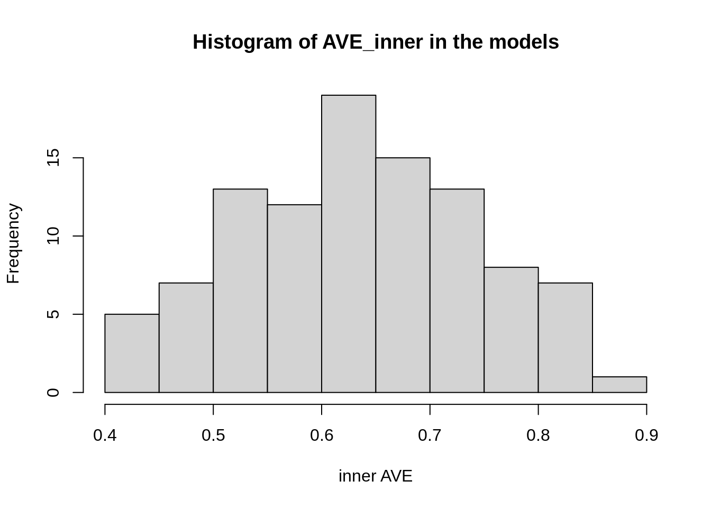

Introduction
The goal of inteRmodel is to provide the tools required to search for models in the generalized canonical correlations.
Prepare
We use the data used on the vignette of the RGCCA package.
Design
The model is encoded in a design matrix. To ease the design there are several functions available. The most important one is subSymm, which make substitutions on symmetric matrices.
C <- matrix(0, nrow = 3, ncol = 3, dimnames = list(names(A), names(A)))
model0 <- subSymm(C, "GE", "CGH", 1)
model0 <- subSymm(model0, "GE", "Loc", 1)
model0
#> GE CGH Loc
#> GE 0 1 1
#> CGH 1 0 0
#> Loc 1 0 0Here we hypothesize that the Agriculture and the industry is linked and that the agriculture is linked with the political block.
Design
Now we look for the model that best relates these data.
out_model <- search_model(A = A, c1 = c(.071,.2, 1), scheme = "horst",
scale = FALSE, verbose = FALSE,
ncomp = rep(1, length(A)),
bias = TRUE)This quickly explores over the 20 different models that could be the best ones. We can see that our hypothesis is on the upper middle: 
According to this a better model would be then:
columns <- grep("var", colnames(out_model))
model <- symm(C, out_model[which.max(out_model$AVE_inner), columns])A model that instead of the expected relation between Agriculture and Industry block they are both related to the Political block. We further explore the relationship on this model:
out_best <- iterate_model(C = model, A = A, c1 = c(.071,.2, 1),
scheme = "horst",
scale = FALSE, verbose = FALSE,
ncomp = rep(1, length(A)),
bias = TRUE)We can see that usually the models is around 0.4 inner AVE.

The best model would be then:
model2 <- symm(C, out_best[which.max(out_best$AVE_inner), columns])
model2
#> GE CGH Loc
#> GE 0 0.0 1.0
#> CGH 0 0.0 0.1
#> Loc 1 0.1 0.0A next step would be to see if some models are better than the others, something along these lines
iterations <- 1000
bs0 <- boot_samples_sgcca(A, model0, c(.071,.2, 1), nb_boot = iterations)
bs1 <- boot_samples_sgcca(A, model, c(.071,.2, 1), nb_boot = iterations)
bs2 <- boot_samples_sgcca(A, model2, c(.071,.2, 1), nb_boot = iterations)We can see that they have different distributions:
Features
We can now analyze the canonical correlation for the weight of each variable.
m2 <- RGCCA::sgcca(A, model2, c1 = c(.071,.2, 1), scheme = "horst",
scale = TRUE, verbose = FALSE, ncomp = rep(1, length(A)),
bias = TRUE)
m0 <- RGCCA::sgcca(A, model0, c1 = c(.071,.2, 1), scheme = "horst",
scale = TRUE, verbose = FALSE, ncomp = rep(1, length(A)),
bias = TRUE)We can now explore the position of each sample:
pars <- par(mfrow = c(1, 2))
plot(m0$Y[[1]][, 1], m0$Y[[2]][, 1], type = "n", xlab = "Block1 Comp1",
ylab = "Block2 Comp1", main = "Initial model")
abline(h = 0, v = 0)
text(m0$Y[[1]][, 1], m0$Y[[2]][, 1], labels = Loc, col = as.numeric(Loc)+1)
plot(m2$Y[[1]][, 1], m2$Y[[2]][, 1], type = "n", xlab = "Block1 Comp1",
ylab = "Block2 Comp1", main = "Final model")
abline(h = 0, v = 0)
text(m2$Y[[1]][, 1], m2$Y[[2]][, 1], labels = Loc, col = as.numeric(Loc)+1)
Although the relative difference on the general outcome what have changed more is the importance of each variable. as we can see here:
plot(m0$a$CGH[, 1], m2$a$CGH[, 1], main = "CGH variables importance",
xlab = "model0", ylab = "model2", pch = 16)
Where some variables that had a weight of 0 in model 0 become important and some variables that were important that no longer have any weight on the model 2.
As you can see the design influences on which variables can be used
Session Info
sessionInfo()
#> R version 3.6.1 (2017-01-27)
#> Platform: x86_64-pc-linux-gnu (64-bit)
#> Running under: Ubuntu 16.04.6 LTS
#>
#> Matrix products: default
#> BLAS: /home/travis/R-bin/lib/R/lib/libRblas.so
#> LAPACK: /home/travis/R-bin/lib/R/lib/libRlapack.so
#>
#> locale:
#> [1] LC_CTYPE=en_US.UTF-8 LC_NUMERIC=C
#> [3] LC_TIME=en_US.UTF-8 LC_COLLATE=en_US.UTF-8
#> [5] LC_MONETARY=en_US.UTF-8 LC_MESSAGES=en_US.UTF-8
#> [7] LC_PAPER=en_US.UTF-8 LC_NAME=C
#> [9] LC_ADDRESS=C LC_TELEPHONE=C
#> [11] LC_MEASUREMENT=en_US.UTF-8 LC_IDENTIFICATION=C
#>
#> attached base packages:
#> [1] stats graphics grDevices utils datasets methods base
#>
#> other attached packages:
#> [1] inteRmodel_0.1.0
#>
#> loaded via a namespace (and not attached):
#> [1] Rcpp_1.0.2 knitr_1.24 magrittr_1.5 MASS_7.3-51.4
#> [5] lattice_0.20-38 R6_2.4.0 rlang_0.4.0 stringr_1.4.0
#> [9] tools_3.6.1 grid_3.6.1 xfun_0.9 RGCCA_2.1.2
#> [13] htmltools_0.3.6 yaml_2.2.0 assertthat_0.2.1 digest_0.6.20
#> [17] rprojroot_1.3-2 pkgdown_1.4.1 crayon_1.3.4 Matrix_1.2-17
#> [21] fs_1.3.1 memoise_1.1.0 evaluate_0.14 rmarkdown_1.15
#> [25] stringi_1.4.3 compiler_3.6.1 desc_1.2.0 backports_1.1.4